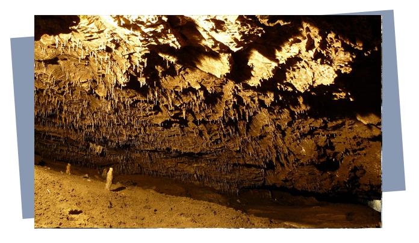
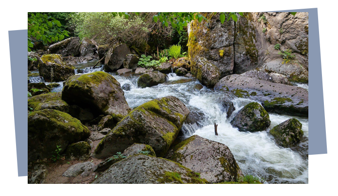

Триградско ждрело
Ждрелото е с епигенетичен произход и е с
дължина около 7 km. Всечено е до 300 – 350 m всред силно
окарстени протерозойски мрамори. Западната му стена се издига на
височина до 180 m, а източната достига до 300 – 350 m. Започва на
около 1,5 km северно от село Триград на около 1180 m н.в., където
Триградска река влиза в пещерата Дяволското гърло и 530 m след
това излиза като голям карстов извор.
Дяволското гърло
Дяволското гърло е пропастна пещера, която е
формирана вследствие на пропадането на земните пластове.
Основната ѝ част е заета от голяма зала, в която се намира най-
високият подземен водопад на Балканския полуостров. Интерес
представлява легендата, която разказва, че древните траки хвърляли
в бездната своите вождове, за да ги направят безсмъртни. Според
друга легенда това е мястото, където митичния певец Орфей слязъл
в подземното царство да търси своята любима Евридика.
Харамийска пещера
Харамийската пещера се намира близо до с. Триград, община Девин. Тя е част от Триградския пещерен район, който обхваща дебели протерозойски мрамори в горното течение на реките Въча, Буйновска, Триградска, Мугленска и Широкалъшка. До входа на пещерата се стига по тясна пътечка, която тръгва от паркинга при пещерата Дяволското гърло и минава през красива борова гора. Тя е част от Триградския пещерен район, който обхваща дебели протерозойски мрамори в горното течение на реките Въча, Буйновска, Триградска, Мугленска и Широкалъшка. До входа на пещерата се стига по тясна пътечка, която тръгва от паркинга при пещерата Дяволското гърло и минава през красива борова гора.
Ягодинска пещера
Ягодинската пещера е една от най-дългите и интересни пещери в района на Родопите и България.
Намира се на 20 км. от Девин. Общата дължина на пещерата е 10 километра, на 5 нива.
Превърната е в истинска туристическа атракция – изградена е 1100-метрова пътека,
електрификация и изкуствен 30 метров тунел по-ниско от естествения вход на пещерата.
В залите на Ягодинската пещера може да се видят чудни сталактити, сталагмите, сталактони, а
също така драперит, синтрови езера, традиционна „стена на греха“, върху която се лепят монети.

Мечешкия водопад
40-метров впечатляващ водопад в непосредствена близост до гр. Девин. Името на водопада идва
от честите посетители на дълбокия вир под водопада – мечките. Красиви гледки и множество
малки водопади допълват атмосферата около водопада.До водопада се стига като се преминава мост, намиращ се в най-далечния край на пътеката, след което през пътека, минаваща между две постройки, чрез която се изкачва в планината.

Музей на балканската пъстърва
Комплексът представя оборудвана музейна експозиция с аквариум с жива пъстърва; обекти за традиционен риболов на пъстърва; табла с любопитна информация за живота, местообитанията и опазването на пъстървата, както и за провежданите в региона световни първенства за улов на пъстърва.Музеят разполага с любопитни факти за балканска и американска пъстърва и въобще за пъстървовите риби.